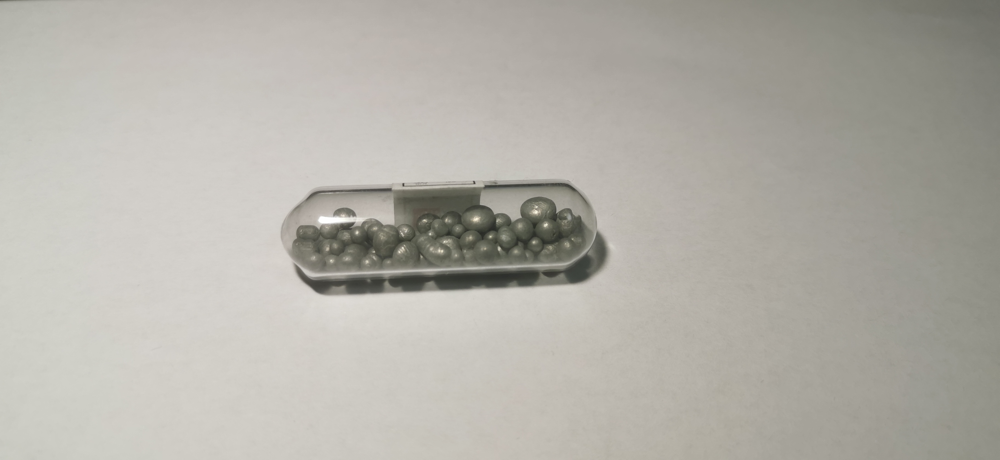

锑
2019.1 锑粒 99.9% 来自冥灵
锑：锑由于元素符号被化学圈、元素收藏圈的玩家轮番嘲讽。例如将淘宝上公认的做工比较差劲、讲话不很好听的元素商家“心中心科技”称为“锑中锑”。
注意：我收到的这支锑与冥灵商店上挂的锑图片不符，是氧化很明显的球状而非晶体，这令我比较疑惑。根据我的经验，这似乎更像是锌粒，或者铍粒？若果真是锑粒，有可能是工业上的散装锑粒，至少在元素收藏商店我没有见过如此失去光泽的锑，也许是冥灵发错货了，还需要进一步核实。
锑：锑由于元素符号被化学圈、元素收藏圈的玩家轮番嘲讽。例如将淘宝上公认的做工比较差劲、讲话不很好听的元素商家“心中心科技”称为“锑中锑”。
注意：我收到的这支锑与冥灵商店上挂的锑图片不符，是氧化很明显的球状而非晶体，这令我比较疑惑。根据我的经验，这似乎更像是锌粒，或者铍粒？若果真是锑粒，有可能是工业上的散装锑粒，至少在元素收藏商店我没有见过如此失去光泽的锑，也许是冥灵发错货了，还需要进一步核实。